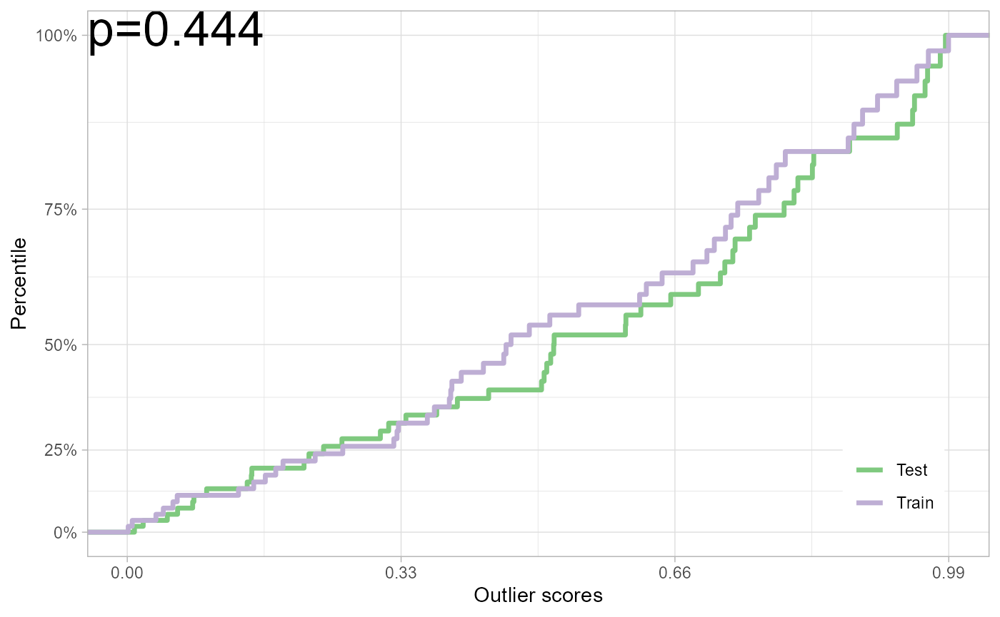

vignettes/diy-score.Rmd
diy-score.RmdPlease see the paper as cited
below (Kamulete 2022) for details. We
denote the R package as dsos, to avoid confusion with
D-SOS, the method.
We show how easy it is to implement D-SOS for a
particular notion of outlyingness. Suppose we want to test for no
adverse shift based on isolation scores in the context of two-sample
comparison. To do so, we need two main ingredients: a scoring function
and a method to compute the \(p-\)value.
First, the scores are obtained using predictions from isolation
forest with the isotree package (Cortes 2020). Isolation forest detects
isolated points, instances that are typically
out-of-distribution relative to the high-density regions of the data
distribution. Naturally, any performant method for density-based
out-of-distribution detection can effectively be used to achieve the
same goal. The function score_od shows the implementation
of one such scoring function in the dsos package.
dsos::score_od
## function(x_train, x_test, n_trees = 500L, threshold = 0.6) {
##
## if (!requireNamespace("isotree", quietly = TRUE)) {
## stop(
## "Package \"isotree\" must be installed to use this function.",
## call. = FALSE
## )
## }
##
## # First fit models
## iso_fit <- isotree::isolation.forest(
## data = x_train,
## ntrees = n_trees # 100 in original iForest paper
## )
##
## # Then predict
## os_train <- predict(iso_fit, newdata = x_train)
## os_test <- predict(iso_fit, newdata = x_test)
##
## # Apply decision threshold according to Chabchoub et al. (2022)
## os_train[os_train < threshold] <- threshold
## os_test[os_test < threshold] <- threshold
## return(list(test = os_test, train = os_train))
## }
## <bytecode: 0x00000151fd814968>
## <environment: namespace:dsos>Second, we estimate the empirical null distribution for the \(p-\)value via permutations. For speed, this
is implemented as a sequential Monte Carlo test with the
simctest package (Gandy
2009). The function pt_refit in the
dsos package combines scoring with inference. The prefix
pt stands for permutation test. The code for _pt_
is relatively straightforward.
dsos may use sample splitting and out-of-bag variants as
alternatives to permutations for \(p-\)value calculation. Both sample
splitting and out-of-bag variants use the asymptotic null distribution
for the test statistic. As a result, they can be appreciably faster than
inference based on permutations.
dsos::pt_refit
## function(x_train, x_test, scorer, n_pt = 2e3) {
## result <- exchangeable_null(
## x_train,
## x_test,
## scorer = scorer,
## n_pt = n_pt,
## is_oob = FALSE
## )
## return(result)
## }
## <bytecode: 0x00000151fd9ca748>
## <environment: namespace:dsos>Take the iris
dataset for example. When the training set only consists of
setosa (flower species) and the test set, only of
versicolor, the data is incompatible with the null of no
adverse shift. In other words, we have strong evidence that the test
contains a disproportionate number of outliers, if the training set is
the reference distribution.
set.seed(12345)
data(iris)
x_train <- iris[1:50,1:4] # Training sample: Species == 'setosa'
x_test <- iris[51:100,1:4] # Test sample: Species == 'versicolor'
iris_test <- pt_refit(x_train, x_test, score = dsos::score_od)
plot(iris_test)
You can plug in your own scores in this framework. Those already
implemented in dsos can be useful but they are by means the
only ones. If you favour a different method for out-of-distribution
(outlier) detection, want to tune the hyperparameters, or choose a
different notion of outlyingness altogether, dsos provides
the building blocks to build your own. The workhorse function, powering
the approach behind the scenes, is a way to calculate the test statistic
from outlier scores (see wauc_from_os).